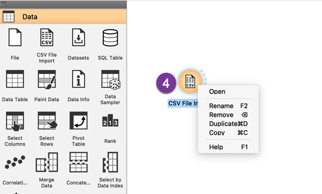
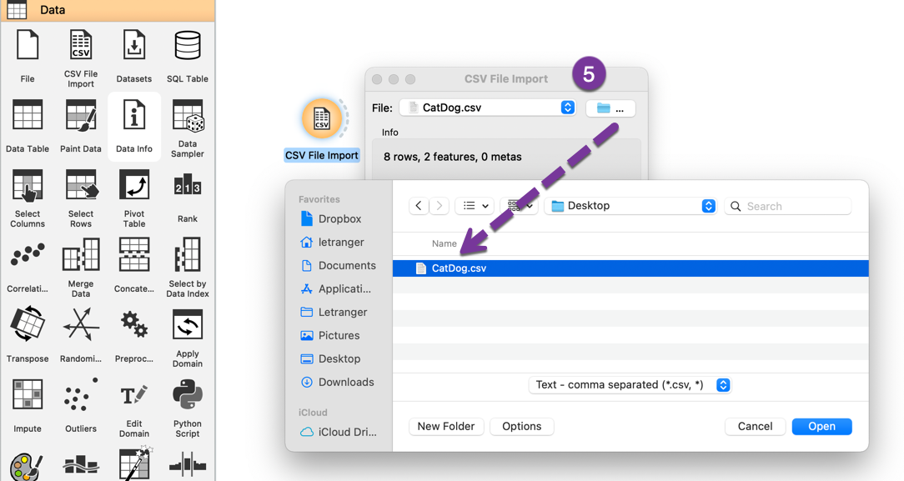
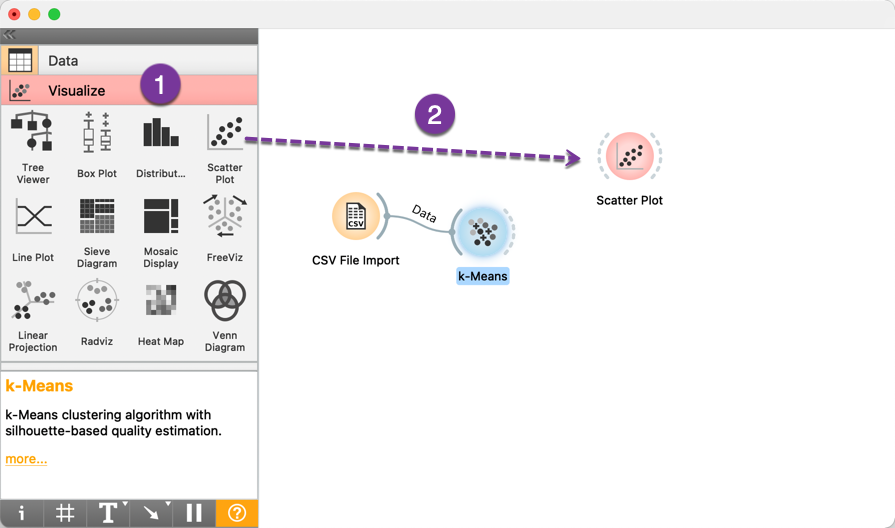

Orange

1. 簡介
- Orange: 非監督式學習, 視覺化的AI操作，不會寫程式也可以做AI分析
2. 數字資料分群
2.1. 讀入資料
開啟Orange，點選New開啟一個新的資料探勘專案：
Figure 1: 沒時間想圖的標題
- 接下來由左側工具欄中點選Data工具欄
將「CSV File Import」圖示拉到右側的空白工作區中

Figure 2: 沒時間想圖的標題
於「CSV File Import」圖示按右鍵，點選「Open」（也可直接雙擊該圖示）

Figure 3: 沒時間想圖的標題
點選Open後會跳出一個對話框，接著點選資料夾圖示，找到步驟(2)準備好的CatDog.csv，將其匯入Orange

Figure 4: 沒時間想圖的標題
匯入後即可看到資料的預覽，按OK後可結束對話框

Figure 5: 沒時間想圖的標題
2.2. 進行分群
匯入資料後即可開始進行分群，本例中使用K-Means演算法進行分群，步驟如下：
- 由於分群屬於非監督式學習，故點選左側工具欄中的Unsupervised
將左側K-Means圖示拉到工作區中（此時工作區中的CSV File Import圖示右側的灰色弧線與K-Means的左側灰色弧線均為虛線）

Figure 6: 沒時間想圖的標題
從CSV File Import右色的灰色弧線拉出一條連接線至K-Means的左側灰色，可以看到兩條灰色弧線均已由虛線轉為實線

Figure 7: 沒時間想圖的標題
分群方法設定：以右鍵點選工作區中的K-Means圖示， 點擊Open進行分群設定（可以直接雙擊K-Means圖示）

Figure 8: 沒時間想圖的標題
設定分群數（K值）：可以看出目前的分群數（Number of Clusters，即K值）為2，代表要將這8筆資料分為兩群，此處的K值可依需求自行設定，此例中維持預設值

Figure 9: 沒時間想圖的標題
若雙擊這條新增的連接線，可以看出這代表將匯入的資料餵給K-Means模組進行分析

Figure 10: 沒時間想圖的標題
2.3. 資料視覺化
分析完成後，即可進行分析結果的視覺化：
- 點選左側工具列中的Visualize
將Scatter Plot圖示拉進工作區

Figure 11: 沒時間想圖的標題
從K-Means圖示右側的灰色弧線拉一條連線至Scatter Plot的左側灰色弧線，將分析完成的資料送至視覺化模組中

Figure 12: 沒時間想圖的標題
以右鍵點選Scatter Plot圖示，點擊Open（也可直接雙雙該圖示）
Figure 13: 沒時間想圖的標題
預設的分佈圖並未以不同顏色區分特徵值的資料點，可點選左側的Color將設定值由Same color改為Cluster
Figure 14: 沒時間想圖的標題
最終結果如下圖所示，可以看出其分群結果與原始資料的設定一致。Orange自動將分群的結果命名為C1、C2。
Figure 15: 沒時間想圖的標題
由上圖雖然可大致推估哪一個資料點屬於哪一類，若要將之以表格方式呈現，則可以再由Data工具欄拉一個Data Table的圖示到工作區中，再由K-Means拉一條連接線至Data Table，如下圖。

Figure 16: 沒時間想圖的標題
雙擊工作區的Data Table後即可看到分類的資料表，表中的Silhouette為分群項目的輪廓係數，其值介於-1～+1間，輪廓值越大，表示該筆資料的分群結果越合理，輪廓值越接近-1，則說明該筆資料更應該分類至其他群中。
Figure 17: 沒時間想圖的標題